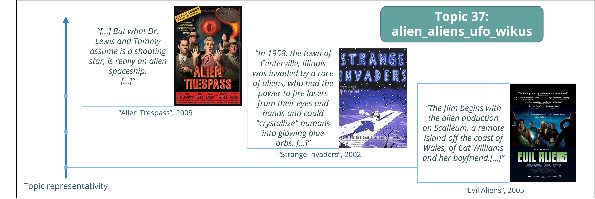
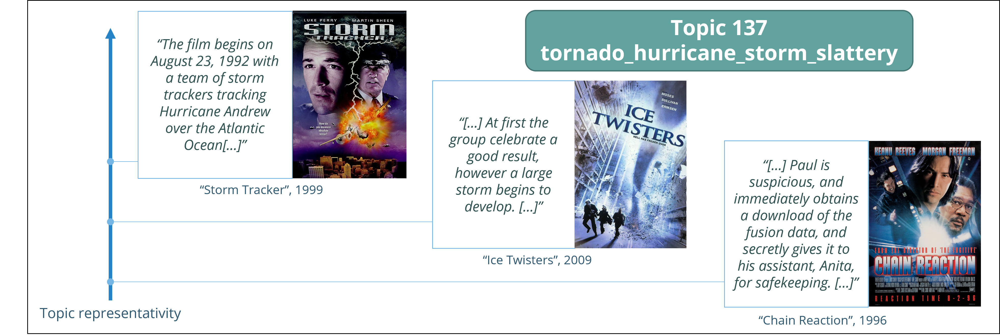
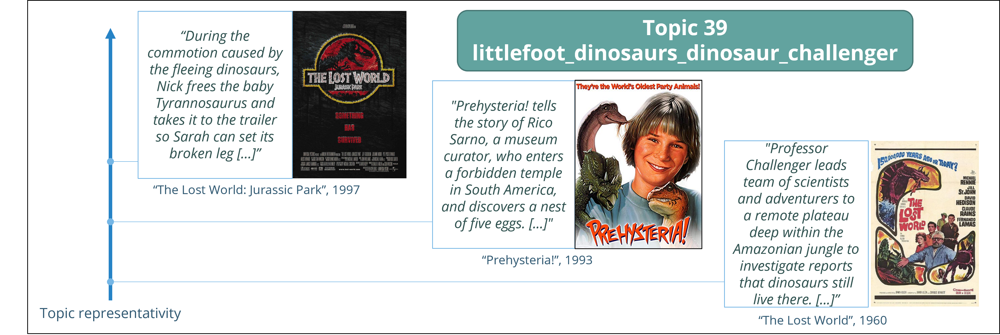
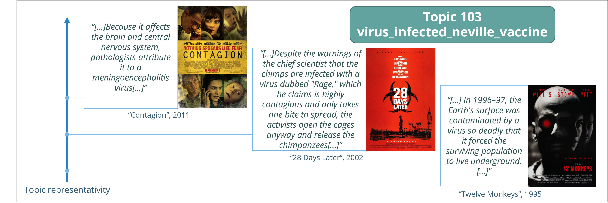
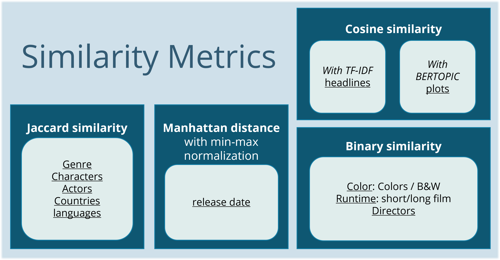

Have you ever watched two movies and thought to yourself, "These movies are so different, but they seem to
be covering the same themes and ideas"? Or perhaps you've noticed that two movies from different countries
and decades seem to be dealing with similar social issues, sentiments or they could display similar
characters. What are the typical topics that comes out? Do movies from similar eras or countries also have
similarities about their content?
These are just a few questions that we will be exploring in this project, as we dive into the hidden
similarities between films from all times and horizons. In order to answer this problem, we will analyze
the dataset of the movies from the CMU Movie Summary Corpus. We will study several similarity features in
this dataset of 41783 movies. One feature we will investigate in detail is the topics covered in movie plots.
Using this similarity metric, we will construct a graph connecting the movies. With this graph, we aim to
identify clusters of movies and evaluate the relationships and influence between them.
When we think about similarity between two movies the first thing that comes to our mind is the content of
the film, in other words, what topics or what fictional world the plot depicts. By looking beyond
surface-level differences and diving into the deeper meanings and messages of these films, we can gain
a greater appreciation for the universal themes and experiences that they depict.
In our initial investigation, we used word clouds to present the findings of the BERTOPIC model's analysis of the topic distribution of a collection of film plot summaries organized by decade. The results indicated that films encompass a wide range of topics, while also being impacted by the events and cultural context of their time period. You can use the arrows above to see the word cloud of each decade.
For instance, the word clouds for the 1930s decade included words related to France, which aligns with the golden age of French cinema. Similarly, the 1940s and 1950s decades were marked by the aftermath of World War II and the Cold War. While all largely represent the family topic, testifying to the links between the characters described in the plots of films. Overall, this study demonstrates the value of the BERTOPIC model for our analysis of film similarity. The results of the BERTOPIC analysis provide valuable insight into the themes and cultural influences of films, which will be useful in our subsequent analysis of film similarity. By analyzing the topic distribution of a collection of film plot summaries, we can observe how films address a wide range of topics while still being shaped by the events of their respective time period.
The figure plotted above is a visualization of the results obtained from applying the BERTOPIC model to a corpus of film plot summaries. Despite some overlap between the topics, the figure provides valuable and accurate information about the relationships between the plots and their corresponding topics. The presence of a large number of small topics allows for a detailed analysis of a wide range of films, while merging them together would result in the loss of important information about individual, original films. Therefore, we decided not to limit the number of topics found by the hbdscan within the BERTOPIC model. Thanks to the slider and the interactive nature of the graph, you can explore the different topics represented by the three terms with the highest C-TF-IDF scores within the documents belonging to each topic.
To further illustrate the results, we will examine specific topics by identifying the films that are most representative of them.
   
It is worth noting the precision of the BERTOPIC model in differentiating science fiction films based on their plot, as seen above. If a film belongs to two topics at the same time (dinosaurs and aliens for example), it will have a high probability of belonging to these topics, and this feature will be taken into account in the similarity calculation using the cosine function. This approach allows the BERTOPIC model to provide a detailed and accurate analysis of science fiction films, enabling a deeper understanding of their narrative context and more meaningful comparison.
Now that we investigated the topics covered in the plots, we can ask ourselves what role plays « sharing the same topics » in the similarity between movies? Also do other features besides topics exist that could allow us to quantify the similarity between movies? In this section we investigate several features that we divide into 4 main categories. All these categories together allow us to define the similarity between movies.
We have defined the following weights associated to each similarity category in order to calculate the total similarity between films:
We chose these weights based on the importance we want to give to each factor in determining the similarity between films. The higher the weight, the more important the factor is in determining the similarity. In particular, we iterated over a list of sequels in order to maximize the score for these films, we performed tests using a set of sequels and we found good results that would connect the movies from the same sequel.

Now that we have established the weight associated with each similarity feature, we need to compute the similarity between 0 and 1 for each feature. The methods used are detailed here above. For more details about these calculations we invite you to check our code available in open source on Github.
We finally get the total similarity between 0 and 1 between every pair of movies and we have obtained our similarity relation between every movie of our dataset. Now let’s construct our movie graph!
Here is our movie graph constructed with movies as nodes and with similarities as weight on the edges. We created a tool able to assess the relations between movies! With this precious tool between our hands, it’s time to investigate the complex similarity between movies taking into accounts underlying movies characteristics. Let’s evaluate their relationship by finding movie communities in which these relations are stronger.
We find the communities associated with the movie graph by using the Louvain algorithm. We get 15 communities
labeled from community 0 until community 14. We notice that we can focus our analysis on the first nine
communities as they include most of the movies of the dataset. These 9 communities correspond to the color
code used in the graph. Let’s analyze the movies present in each community to get a sense of what they
represent, and what links the movies belonging to them.
Community 0: This community is the largest community in our movie graph which includes 15’300 movies corresponding to 40% of the movies. Because of the size of this community, we expect it to be quite general so that it can correspond to many movies. Let’s check this hypothesis by looking at its characteristics. First, we see that this group is made of mostly American movies which correlates with the fact that this is the most represented country in our dataset. We see that the main genres are respectively in descending importance: Drama, Comedy, Thriller and Romance. These genres are very common movie genres. The topics evolve around the American way of living with topics such as cow-boy related: “Horse, Town, Ranch” or family related: “Wedding, Husband, Wife”. The names of the characters are also common American names: Sam, Jack, Frank, Charlie, … The directors and actors belong to Hollywood, especially old Hollywood movies are present because of casts involving John Wayne, Bette Davis or James Stewart and directed by Alfred Hitchcock, Michael Curtiz. We can see this also by looking at the release year which follows the dataset release year distribution except between the 1930s and the 1950s where it is higher than the dataset distribution. In general, we can define this community by the Hollywood golden age.
Community 1: This community is the fourth community in size with 2400 movies. By looking at the movie we notice straight away that these movies are grouped because of their content which revolves around Horror, Thriller and Science fiction which are genres more specific than community 0’s genres for example. This is confirmed by checking the topics covered which are related to Fantastic: “Demon, Ghost” to Horror: “Vampires, Dracula” and to dystopic Science fiction: “Aliens, zombies, Nuclear bomb” or to more futurist science fiction “Comet, Earth, Space”. These movies involving special effects suggest that they correspond to Hollywood or European high budget industry. They set up characters like: Dracula, Batman, or Thor. This is confirmed when checking the countries or the actors: Christopher Lee that played in Lord of the Rings, Peter Cushing known for Sherlock Holmes or Frankenstein. The special effect involved in these movies correlate with the fact these movies are quite recent (80s, 90s, 00s). We could resume this community as Horror and science fiction blockbusters.
Community 2: This community is the third community in size with 4600 movies. This community is contrasted with the previous ones with respect to the country of origin. Here USA is not the main country, as it is in the overall dataset. This community seems more international especially European: France, Italy, Germany, UK, Spain. This is confirmed by the genre “worldwide” ranked second after Drama. The actors such as Gerard Depardieu, Geraldine Chaplin, and directors such as Ingmar Bergman (Swedish), Claude Chabrol (French) show a European production. The topics seems to be classified by countries, which matches the fact that most of the movies are English speaking movies, so non-English can stand out as outliers easily. We could resume this community European cinema.
Community 3: This community is the fourth community in size with 2600 movies. This community is the first one to have a majority of Black and white movies. This indicates that this cluster is separated from the other based on the time context. The decade distribution is not heavy tail towards 2000s and has most films released date before the 1960s. Some uncommon movie genres such as Black-and-White and War film appear. The time context of pre-1960s suggests that the themes covered in the movie could put forward the society context of WW1 and WW2. This is confirmed by the topics that include “German, Sergeant, Aircrfat, Hitler”. This community is not only grouped by the time context but also by the topic of historical drama and fight such as “Musketeers, Pirates” or “Horse, Ranch” related to cow-boys. We could name this group as Action and Adventure past stories
Community 4: This community is the 2nd community in size with 6000 movies. This community is very different from the others because it if focused on Indian movies. Indeed, we can see that the main country in “India”, the main languages are Indian languages, the cast is composed of Indian actors and is directed by Indian director. If we look more into the content of these movies, we notice that most of the movies are part of Drama World Cinema or Romance Genre. We can see also a new genre previously unseen “Bollywood”. However, when we look at the topics, we see that many of them are grouped mostly because of Indian words being in the plot. But the first topic of this community is unrelated to Indian culture: “Film, love, village, story” and correlates more the Dramatic characteristic of these movies. Therefore, we see that our topic extraction, which is trained on English words, has trouble finding topics about the plot unrelated to the Indian names in the plot. This community can be named “Indian Cinema”.
Community 5: This community is composed of 1000 movies and is focused on English speaking cinema, in particular American films but it’s different from Community 0 because of the topics covered. We see that the topics are more modern and specific: we have topics about Sport: “Boxing, Baseball, Basketball, Football, Skating” but note that they are distinct topics. We also have topics about Music “Band, music, song, bands” and a topic about Harry Potter “Harry, Voldemort, Dumbledore”. The genres are also diverse: Drama, Comedy, Romance, Sport. So what do these films have in common? They seem to be films related to modern topics, and pop culture which correlates with their release date which is heavily tailed toward the 1990s and 2000s. Their directors are more modern than Community 0 with for example Woody Allen or Garry Marshall. We could define this topic as Modern Hollywood.
Community 6: This community is focused on the Japanese movies: we can see that in the language and the countries obviously, as well as the names of actors and directors. More interestingly, we can see that the genre “Anime” and “Animation” is way more popular than in other communities, which is also detected in the topics (with names such as “naruto” and “ash - pokemon”). We also see “Godzilla” as the most popular character in this community.
Community 7: This community is focused on cartoons, mostly americans (in English). We also see the genre “Short Film” appear more than in the other communities, which is also reflected in the runtime feature (which isn’t surprising). We can also see that the topics catch popular cartoons such as “Tom and Jerry”, “Buzz Lightyear” and “Shrek”, while the characters catch some others like “Moe”, “Eeyore” and “Mickey Mouse”. In the release date, we see two peaks, one around 1940, and a second one now (which probably will continue growing).
Community 8: This film community is more focused on East Asia, while also clearly distinguishing itself from Japanese cinema. This community is a pleasant surprise, as it stands out despite its underrepresentation among other geographic regions. It introduces us to the fact that Hong Kong is a hub of Asian cinema, and that the most commonly spoken language in this community is Mandarin. While naturally acknowledging the most frequently present actor: Jackie Chan.
Through our analysis of the movie dataset from the CMU Movie Summary Corpus, we were able to uncover
the hidden similarities between films from all times and horizons. In fact, by using the BERTOPIC model
to examine the topic distribution of film plot summaries, we were able to gain valuable insight into the
themes and cultural influences of films.
Considering multiple similarity features, such as plot, characters, and production choices, is essential
in order to get a more comprehensive understanding of the similarities between films. By constructing a
graph based on these similarity features, we were able to identify clusters of movies and evaluate the
relationships and influence between them.
The BERTOPIC model and other tools used in this study have great potential for further exploration.
For example, they could be used to conduct studies of similarity in a temporal context, in order to track
the course of influences between different geographic regions and cultures.
These findings could have significant implications for filmmakers, film critics, and film enthusiasts.
Filmmakers can draw inspiration from past films while still adding their own unique elements, and film
critics and enthusiasts can appreciate the universal themes and experiences depicted in films from different
times and places. Overall, this study underscores the importance of looking beyond surface-level differences
and exploring the deeper meanings and messages of films in order to gain a greater appreciation for their
universal themes and experiences.